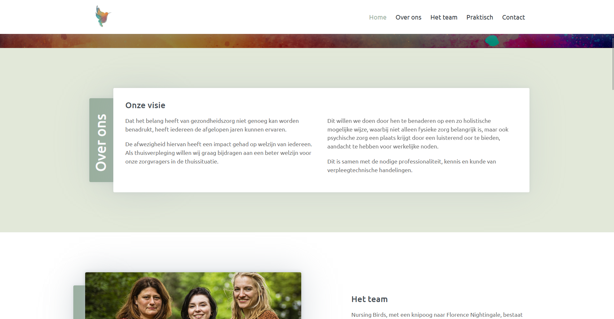
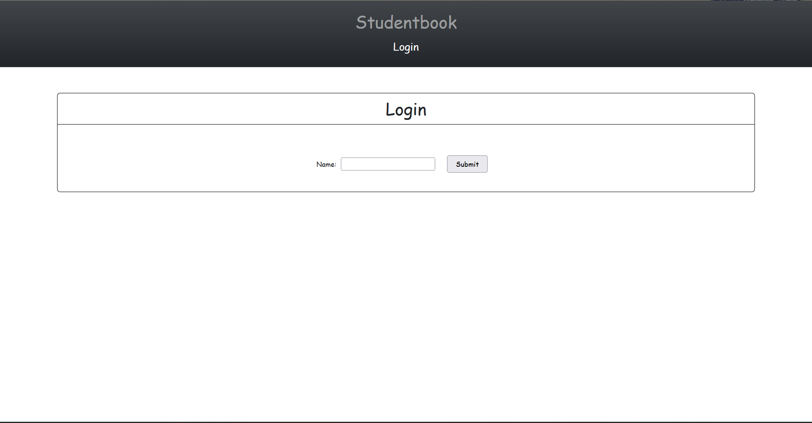

I am a passionate student who aspires to become a front-end developer specializing in web design and UI/UX design. I strive to learn and also work very well in a team that gets the job done. I try to work optimally and efficiently, I am not satisfied with a not optimal quick solution.
CVWebsite for the city of Leuven, Ecofoodmap of Leuven2030
Framework:
Frontend: ReactJS - Backend: Strapi
Work: UCLL

An Adobe illustrator assignment for my Graphic Skills course
Tool
Adobe Illustrator
Work: PXL
Website for private individuals and their independent business called Nursing Birds
Framework:
Plain HTML and CSS
Work: Private
A program that scrapes every link from a home page and puts it in a list and then always does the same thing in that link
Language:
Elixir - Distributed
Work: UCLL
A media platform where students and teachers can communicate with each other (kind of like Facebook)
Framework:
Frontend: ReactJS - Backend: Express
Work: UCLL

An Adobe Photoshop assignment for my Graphic Skills course
Tool
Adobe Photoshop
Work: PXL